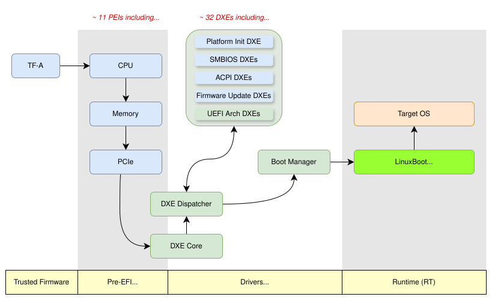

LinuxBoot on Ampere Mt. Jade Platform
The Ampere Altra Family processor based Mt. Jade platform is a high-performance ARM server platform, offering up to 256 processor cores in a dual socket configuration. The Tianocore EDK2 firmware for the Mt. Jade platform has been fully upstreamed to the tianocore/edk2-platforms repository, enabling the community to build and experiment with the platform’s firmware using entirely open-source code. It also supports LinuxBoot, an open-source firmware framework that reduces boot time, enhances security, and increases flexibility compared to standard UEFI firmware.
Mt. Jade has also achieved a significant milestone by becoming the first server certified under the Arm SystemReady LS certification program. SystemReady LS ensures compliance with standardized boot and runtime environments for Linux-based systems, enabling seamless deployment across diverse hardware. This certification further emphasizes Mt. Jade’s readiness for enterprise and cloud-scale adoption by providing assurance of compatibility, performance, and reliability.
This case study explores the LinuxBoot implementation on the Ampere Mt. Jade platform, inspired by the approach used in Google’s LinuxBoot deployment.
Ampere EDK2-LinuxBoot Components
The Mt. Jade platform embraces a hybrid firmware architecture, combining UEFI/EDK2 for hardware initialization and LinuxBoot for advanced boot functionalities. The platform aligns closely with step 6 in the LinuxBoot adoption model.

The entire boot firmware stack for the Mt. Jade is open source and available in the Github.
- EDK2: The PEI and minimal (stripped-down) DXE drivers, including both common and platform code, are fully open source and resides in Tianocore edk2-platforms and edk2 repositories.
- LinuxBoot: The LinuxBoot binary (flashkernel) for Mt. Jade is supported in the linuxboot/linuxboot repository.
Ampere Solution for LinuxBoot as a Boot Device Selection
Ampere has implemented and successfully upstreamed a solution for integrating LinuxBoot as a Boot Device Selection (BDS) option into the TianoCore EDK2 framework, as seen in commit ArmPkg: Implement PlatformBootManagerLib for LinuxBoot. This innovation simplifies the boot process for the Mt. Jade platform and aligns with LinuxBoot’s goals of efficiency and flexibility.
Unlike the earlier practice that replaced the UEFI Shell with a LinuxBoot flashkernel, Ampere’s solution introduces a custom BDS implementation that directly boots into the LinuxBoot environment as the active boot option. This approach bypasses the need to load the UEFI Shell or UiApp (UEFI Setup Menu), which depend on numerous unnecessary DXE drivers.
To further enhance flexibility, Ampere introduced a new GUID specifically for the LinuxBoot binary, ensuring clear separation from the UEFI Shell GUID. This distinction allows precise identification of LinuxBoot components in the firmware.
Build Process
Building a flashable EDK2 firmware image with an integrated LinuxBoot flashkernel for the Ampere Mt. Jade platform involves two main steps: building the LinuxBoot flashkernel and integrating it into the EDK2 firmware build.
Step 1: Build the LinuxBoot Flashkernel
The LinuxBoot flash kernel is built as follows:
git clone https://github.com/linuxboot/linuxboot.git
cd linuxboot/mainboards/ampere/jade && make fetch flashkernel
After the build process completes, the flash kernel will be located at: linuxboot/mainboards/ampere/jade/flashkernel
Step 2: Build the EDK2 Firmware Image with the Flash Kernel
The EDK2 firmware image is built with the LinuxBoot flashkernel integrated into the flash image using the following steps:
git clone https://github.com/tianocore/edk2-platforms.git
git clone https://github.com/tianocore/edk2.git
git clone https://github.com/tianocore/edk2-non-osi.git
./edk2-platforms/Platform/Ampere/buildfw.sh -b RELEASE -t GCC -p Jade -l linuxboot/mainboards/ampere/jade/flashkernel
The buildfw.sh script automatically integrates the LinuxBoot flash kernel (provided via the -l option) as part of the final EDK2 firmware image.
This process generates a flashable EDK2 firmware image with embedded LinuxBoot, ready for deployment on the Ampere Mt. Jade platform.
Booting with LinuxBoot
When powered on, the system will boot into the u-root and automatically kexec to the target OS.
Run /init as init process
1970/01/01 00:00:10 Welcome to u-root!
_
_ _ _ __ ___ ___ | |_
| | | |____| '__/ _ \ / _ \| __|
| |_| |____| | | (_) | (_) | |_
\__,_| |_| \___/ \___/ \__|
cgroup: Unknown subsys name 'perf_event'
init: 1970/01/01 00:00:10 Deprecation warning: use UROOT_NOHWRNG=1 on kernel cmdline instead of uroot.nohwrng
1970/01/01 00:00:10 Booting from the following block devices: [BlockDevice(name=nvme0n1, fs_uuid=) BlockDevice(name=nvme0n1p1, fs_uuid=d6c6-6306) BlockDevice(name=nvme0n1p2, fs_uuid=63402158-6266-48fb-b602-5f83f26bd0b9) BlockDevice(name=nvme0n1p3, fs_uuid=) BlockDevice(name=nvme1n1, fs_uuid=) BlockDevice(name=nvme1n1p1, fs_uuid=525c-92fb)]
1970/01/01 00:00:10 [grub] Got config file file:///tmp/u-root-mounts3457412855/nvme0n1p1/EFI/ubuntu/grub.cfg:
search.fs_uuid 63402158-6266-48fb-b602-5f83f26bd0b9 root
set prefix=($root)'/grub'
configfile $prefix/grub.cfg
1970/01/01 00:00:10 Warning: Grub parser could not parse ["search" "--fs-uuid" "63402158-6266-48fb-b602-5f83f26bd0b9" "root"]
1970/01/01 00:00:10 [grub] Got config file file:///tmp/u-root-mounts3457412855/nvme0n1p2/grub/grub.cfg
1970/01/01 00:00:10 Error: Expected 1 device with UUID "1334d6c5-c16f-46ba-9120-5127ae43bf63", found 0
1970/01/01 00:00:10 Error: Expected 1 device with UUID "1334d6c5-c16f-46ba-9120-5127ae43bf63", found 0
Welcome to LinuxBoot's Menu
Enter a number to boot a kernel:
1. Ubuntu
2. Ubuntu, with Linux 6.8.0-49-generic
3. Ubuntu, with Linux 6.8.0-49-generic (recovery mode)
4. Ubuntu, with Linux 6.8.0-48-generic
5. Ubuntu, with Linux 6.8.0-48-generic (recovery mode)
6. Reboot
7. Enter a LinuxBoot shell
Enter an option ('01' is the default, 'e' to edit kernel cmdline):
> 07
> dmidecode -t 4
# dmidecode-go
Reading SMBIOS/DMI data from sysfs.
SMBIOS 3.3.0 present.
Handle 0x0003, DMI type 4, 51 bytes
Processor Information
Socket Designation: CPU01
Type: Central Processor
Family: ARMv8
Manufacturer: Ampere(R)
ID: 01 00 16 0A A1 00 00 00
Signature: Implementor 0x0a, Variant 0x1, Architecture 6, Part 0x000, Revision 1
Version: Ampere(R) Altra(R) Processor
Voltage: 1.0 V
External Clock: 25 MHz
Max Speed: 3000 MHz
Current Speed: 3000 MHz
Status: Populated, Enabled
Upgrade: Unknown
L1 Cache Handle: 0x0001
L2 Cache Handle: 0x0002
L3 Cache Handle: Not Provided
Serial Number: 000000000000000002550904033865B4
Asset Tag: Not Set
Part Number: Q80-30
Core Count: 80
Core Enabled: 80
Thread Count: 80
Characteristics:
64-bit capable
Multi-Core
Execute Protection
Enhanced Virtualization
Power/Performance Control
Handle 0x0007, DMI type 4, 51 bytes
Processor Information
Socket Designation: CPU02
Type: Central Processor
Family: ARMv8
Manufacturer: Ampere(R)
ID: 01 00 16 0A A1 00 00 00
Signature: Implementor 0x0a, Variant 0x1, Architecture 6, Part 0x000, Revision 1
Version: Ampere(R) Altra(R) Processor
Voltage: 1.0 V
External Clock: 25 MHz
Max Speed: 3000 MHz
Current Speed: 3000 MHz
Status: Populated, Enabled
Upgrade: Unknown
L1 Cache Handle: 0x0005
L2 Cache Handle: 0x0006
L3 Cache Handle: Not Provided
Serial Number: 000000000000000002560909033865B4
Asset Tag: Not Set
Part Number: Q80-30
Core Count: 80
Core Enabled: 80
Thread Count: 80
Characteristics:
64-bit capable
Multi-Core
Execute Protection
Enhanced Virtualization
Power/Performance Control
>
M-? toggle key help • C-d erase/stop • C-c clear/cancel • C-r search hist …
Future Work
While the LinuxBoot implementation on the Ampere Mt. Jade platform represents a significant milestone, several advanced features and improvements remain to be explored. These enhancements would extend the platform’s capabilities, improve its usability, and reinforce its position as a leading open source firmware solution. Key areas for future development include:
Secure Boot with LinuxBoot
One of the critical areas for future development is enabling secure boot verification for the target operating system. In the LinuxBoot environment, the target OS is typically booted using kexec. However, it is unclear how Secure Boot operates in this context, as kexec bypasses traditional firmware-controlled secure boot mechanisms. Future work should investigate how to extend Secure Boot principles to kexec, ensuring that the OS kernel and its components are verified and authenticated before execution. This may involve implementing signature checks and utilizing trusted certificate chains directly within the LinuxBoot environment to mimic the functionality of UEFI Secure Boot during the kexec process.
TPM Support
The platform supports TPM, but its integration with LinuxBoot is yet to be defined. Future work could explore utilizing the TPM for secure boot measurements, and system integrity attestation.
Expanding Support for Additional Ampere Platforms
Building on the success of LinuxBoot on Mt. Jade, future efforts should expand support to other Ampere platforms. This would ensure broader adoption and usability across different hardware configurations.
Optimizing the Transition Between UEFI and LinuxBoot
Improving the efficiency of the handoff between UEFI and LinuxBoot could further reduce boot times. This optimization would involve refining the initialization process and minimizing redundant operations during the handoff.
Advanced Diagnostics and Monitoring Tools
Adding more diagnostic and monitoring tools to the LinuxBoot u-root environment would enhance debugging and system management. These tools could provide deeper insights into system performance and potential issues, improving reliability and maintainability.